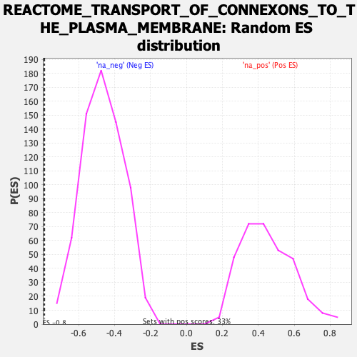

| | | Dataset | DE_genes |
| Phenotype | NoPhenotypeAvailable |
| Upregulated in class | na_neg |
| GeneSet | REACTOME_TRANSPORT_OF_CONNEXONS_TO_THE_PLASMA_MEMBRANE |
| Enrichment Score (ES) | -0.79066133 |
| Normalized Enrichment Score (NES) | -1.7022032 |
| Nominal p-value | 0.0 |
| FDR q-value | 0.045682784 |
| FWER p-Value | 0.544 |
Table: GSEA Results Summary
 Fig 1: Enrichment plot: REACTOME_TRANSPORT_OF_CONNEXONS_TO_THE_PLASMA_MEMBRANE
Fig 1: Enrichment plot: REACTOME_TRANSPORT_OF_CONNEXONS_TO_THE_PLASMA_MEMBRANE
Profile of the Running ES Score & Positions of GeneSet Members on the Rank Ordered List
| PROBE | GENE SYMBOL | GENE_TITLE | RANK IN GENE LIST | RANK METRIC SCORE | RUNNING ES | CORE ENRICHMENT | | 1 | TUBAL3 | | | 4517 | 0.040 | -0.2903 | No |
| 2 | TUBB4A | | | 5908 | -0.033 | -0.3786 | No |
| 3 | GJB2 | | | 7091 | -0.117 | -0.4492 | No |
| 4 | TUBA4B | | | 7863 | -0.185 | -0.4900 | No |
| 5 | TUBA8 | | | 8173 | -0.215 | -0.4994 | No |
| 6 | GJA1 | | | 8690 | -0.273 | -0.5193 | No |
| 7 | TUBB2A | | | 8743 | -0.279 | -0.5089 | No |
| 8 | TUBB1 | | | 9222 | -0.338 | -0.5232 | No |
| 9 | TUBB2B | | | 9331 | -0.350 | -0.5130 | No |
| 10 | TUBB3 | | | 11047 | -0.605 | -0.5941 | No |
| 11 | TUBA1B | | | 12685 | -0.975 | -0.6520 | No |
| 12 | TUBB6 | | | 14829 | -2.090 | -0.6877 | Yes |
| 13 | TUBA1A | | | 15200 | -2.664 | -0.5805 | Yes |
| 14 | TUBA1C | | | 15329 | -3.069 | -0.4376 | Yes |
| 15 | TUBA4A | | | 15432 | -3.985 | -0.2479 | Yes |
| 16 | TUBB4B | | | 15465 | -5.085 | 0.0004 | Yes |
Table: GSEA details [plain text format]

Fig 2: REACTOME_TRANSPORT_OF_CONNEXONS_TO_THE_PLASMA_MEMBRANE: Random ES distribution
Gene set null distribution of ES for REACTOME_TRANSPORT_OF_CONNEXONS_TO_THE_PLASMA_MEMBRANE